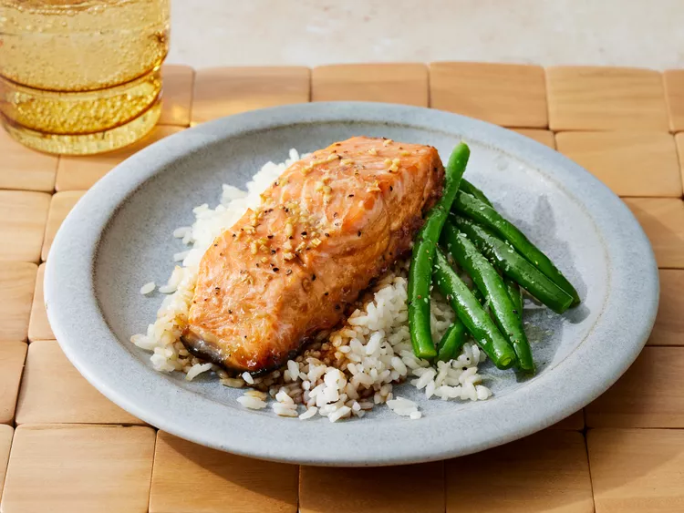

Maple Salmon

Description
This restaurant-worthy maple salmon recipe is as good as it gets! Plus, it's easy to make with simple ingredients you probably already have on hand.
Ingredients
- 1/4 cup maple syrup.
- 2 tablespoons soy sauce
- 1 clove garlic, minced.
- 1/4 teaspoon garlic salt.
- 1/8 teaspoon ground black pepper.
- 1 pound salmon.
Steps
- Stir maple syrup, soy sauce, garlic, garlic salt and pepper together in a small bowl.
- Cut salmon into 4 equal-sized fillets; place in a shallow glass baking dish and coat with maple syrup mixture. Cover the dish and marinate salmon in the refrigerator for 30 minutes, turning once halfway.
- Preheat the oven to 200 degrees C.
- Place the baking dish in the preheated oven and bake salmon uncovered until flesh easily flakes with a fork, about 20 minutes.
- Serve and enjoy.